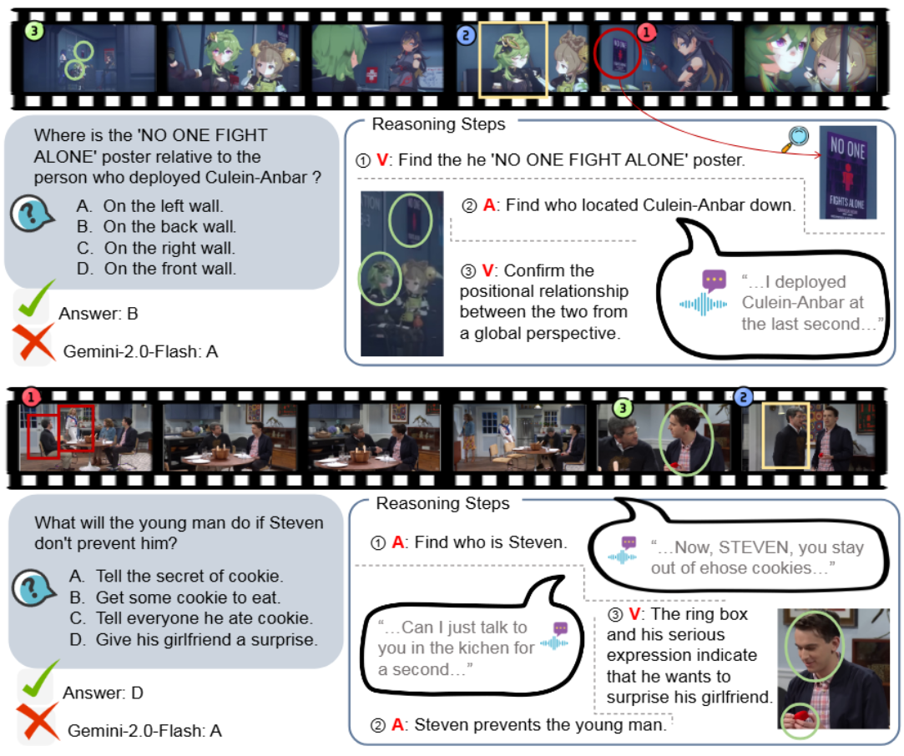
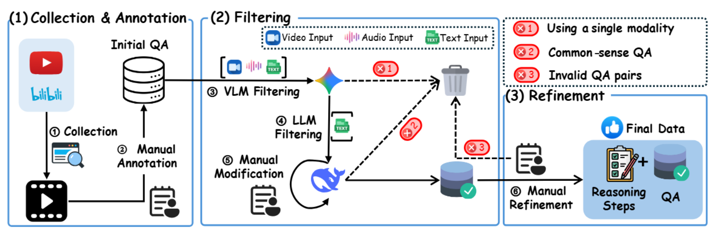

Benchmark Statistics
Data Examples
Examples in OmniVideoBench (“V” presents vision and “A” presents audio), and we present the atomic reasoning traces for these examples.
Generation Pipeline
he complete pipeline of data collection, annotation, and refinement, where filtering and refinement serve as two key processes for quality assurance.
Data Distribution

(a) OmniVideoBench covers 8 major categories and 68 subcategories. (b) OmniVideoBench comprises 13 task types.The above part shows the video duration distribution across different tasks, while the durations are categorized into four groups: "Short" for less than 1 minute, "Medium" for 1--5 minutes, "Long" for 5--10 minutes, and "Ultralong" for more than 10 minutes. The lower part illustrates the distribution of three types of audio (i.e., Speech, Sound and Music). (c) Distribution of video durations across four time intervals. (d) Distribution of three audio types.